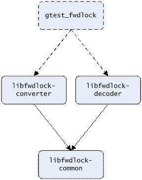
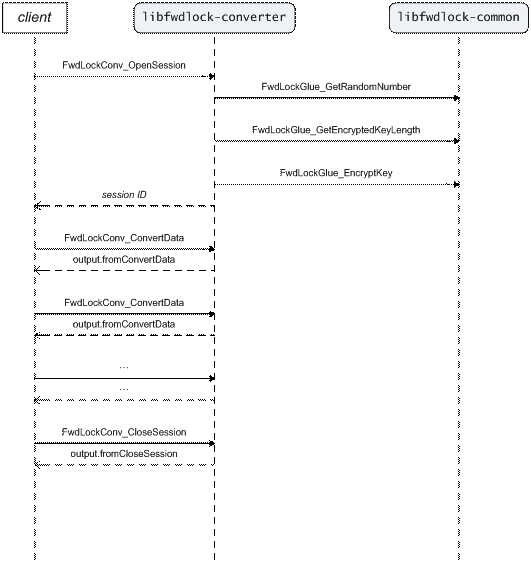
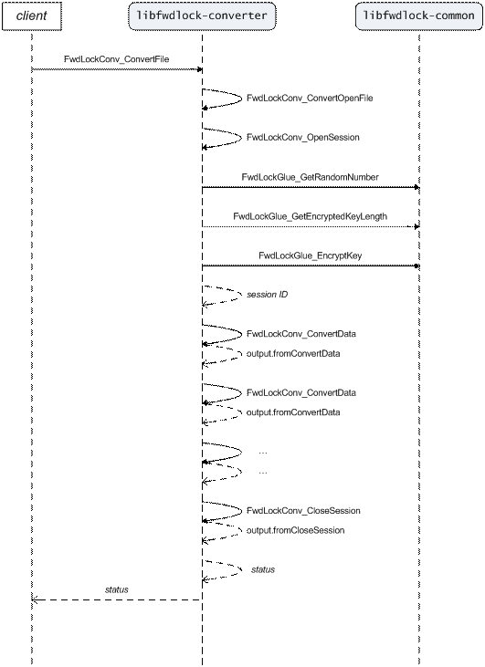
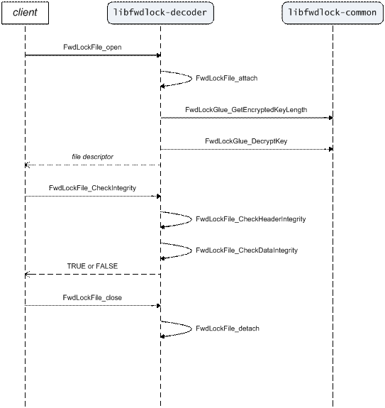
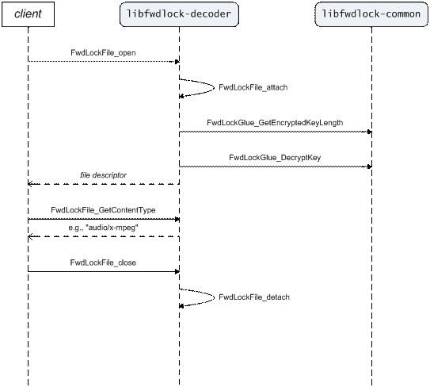
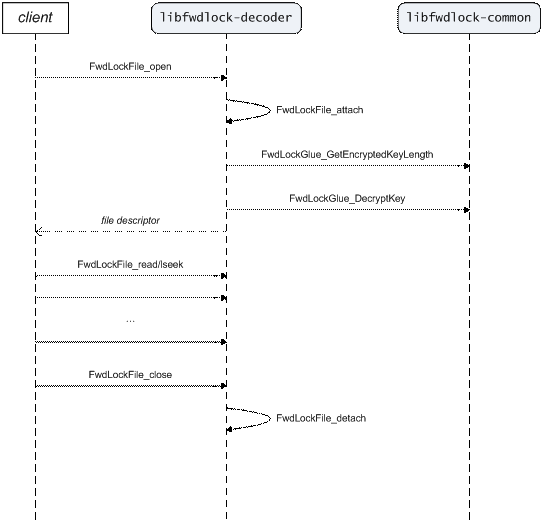

Forward Lock Converter And Decoder
3.1.1 Convert Data (Push-Mode Conversion)
3.1.2 Convert File (Pull-Mode Conversion)
4 Definition of the Internal Forward Lock File Format
The internal Forward Lock file format is used for encrypting inherently unencrypted OMA DRM version 1 Forward Lock and Combined Delivery files so they can be securely stored on externally accessible file system partitions such as memory stick.
Our general strategy is to convert such OMA DRM Message (‘.dm’) files to internal Forward Lock (‘.fl’) files as soon as they are downloaded or otherwise transferred to the phone, and not actually provide any decoders for ‘.dm’ files.
The Forward Lock Converter converts OMA DRM Message files to the internal file format. The Forward Lock Decoder provides a POSIX-level API for transparent reading and seeking through such a converted file as if it were unencrypted. The API also includes functions for checking a file’s integrity and getting the MIME type of its embedded content.
The converter and decoder are built into two separate libraries, which share common code for random number generation and key encryption in a third library. For test purposes there is also a unit test application. See Figure 1.

Figure 1. Block diagram illustrating the dependencies between the executable modules.
This section describes all the use cases for the converter and decoder. It shows the sequence of API calls that should be used to solve these use cases.
Through the converter API, conversion can be performed in one of two ways:
1. Push-mode conversion is when the client progressively feeds data to the converter as it arrives. This is appropriate when data arrives gradually in chunks, with idle time in between. Consequently, push mode is used for converting files being downloaded through HTTP. See section 3.1.1.
2. Pull-mode conversion is when the converter drives the process and consumes data from the client as it needs it. This is appropriate when the entire file to be converted is readily available. Hence, pull mode is used by the unit test application. See section 3.1.2.
Internally, pull-mode conversion is implemented in terms of the API for push-mode conversion.
Push-mode conversion is performed as follows (see also Figure 2):
1. FwdLockConv_OpenSession initializes the output parameter and returns a session ID to be used in subsequent calls to the API. The output parameter is a union of return values whose correct use at any given moment is determined by the API function last called.
2. FwdLockConv_ConvertData is called repeatedly until no more input data remains. Each call converts the maximum amount of data possible and writes it to the output buffer. The client then writes this data to file.
3. FwdLockConv_CloseSession cleans up the session and deallocates the output buffer. If all has gone well, a two-part cryptographic signature of the output file is calculated. The client must go back and rewrite part of the file header with this updated signature information.
Every time a file is being converted, the converter calls FwdLockGlue_GetRandomNumber to generate a new, unique session key. No two converted files look alike, even if the original files are the same.
Note: The random bytes cannot come from any bare-minimum implementation of the C-library rand function—they must be cryptographically secure. Otherwise, security will be compromised.
The session key is encrypted and stored within the converted file. Key encryption is performed using FwdLockGlue_GetEncryptedKeyLength and FwdLockGlue_EncryptKey. These two functions, together with the corresponding decryption function (FwdLockGlue_DecryptKey), are the integration points where an OEM manufacturer may implement their own key-encryption scheme.
Note: The key-encryption key must be unique to each device; this is what makes the files forward lock–protected. Ideally, it should be derived from secret hardware parameters, but at the very least it should be persistent from one master reset to the next.
Note: In the open-source implementation of the libfwdlock-common library, a random key-encryption key is generated and stored in plaintext in the file system, without being obfuscated in any way (doing so would be futile since the source code is openly available). This key must be kept secret from the user, and shouldn’t be possible to extract through backup-and-restore functionality or the like. OEM manufacturers will probably want to implement a truly hardware-based device-unique key.

Figure 2. Converter UC: Convert Data.
Pull-mode conversion is performed by calling FwdLockFile_ConvertFile with the filename, unless there is need for a specialized read function, in which case FwdLockFile_ConvertOpenFile should be used directly instead. See Figure 3.
Internally, FwdLockFile_ConvertFile calls FwdLockFile_ConvertOpenFile. The latter then proceeds with the conversion using the push-mode API, acting as the client in the previous use case; see section 3.1.1.

Figure 3. Converter UC: Convert File.
The decoder API allows the client to do the following:
1. Check the integrity of an internal Forward Lock file, i.e., detect whether it has been manipulated in any way; see section 3.2.1.
2. Get the MIME type of the embedded content (the “original” MIME type before DRM protection was applied); see section 3.2.2.
3. Decode the file by random access, i.e., read and seek through it in an arbitrary manner; see section 3.2.3.
All subsequent operations on a file first require it to be opened. Opening a file returns a file descriptor—a handle to be used in these subsequent operations.
If the filename is known, an internal Forward Lock file can be opened using FwdLockFile_open. If only the file descriptor of an already open file is available, a decoding session can instead be initialized using FwdLockFile_attach.
Internally, FwdLockFile_open calls FwdLockFile_attach. For efficiency reasons, FwdLockFile_attach therefore assumes that the file position is at the beginning of the file when the function gets called. A client who calls it directly must make sure that this assumption holds.
When a file is being attached, the session key stored in the file during conversion is decrypted using FwdLockGlue_GetEncryptedKeyLength and FwdLockGlue_DecryptKey, in order to set up for decoding and integrity checking.
For just getting the content type, however, retrieving the session key would strictly speaking not be necessary, so there is an opportunity here to optimize for that if it proves necessary later.
Symmetrical to FwdLockFile_open and FwdLockFile_attach, there are also functions for closing a file or detaching from it:
1. If it was opened with FwdLockFile_open it should be closed with FwdLockFile_close.
2. If it was attached with FwdLockFile_attach it should be detached with FwdLockFile_detach.
There are three methods for checking the integrity of an internal Forward Lock file, in whole or in part (see also Figure 4):
1. FwdLockFile_CheckDataIntegrity, which checks the integrity of the encrypted content data.
2. FwdLockFile_CheckHeaderIntegrity, which checks the integrity of the file header, including the content type and other fields not currently supported but reserved for future use.
3. FwdLockFile_CheckIntegrity, which internally calls first FwdLockFile_CheckHeaderIntegrity and then FwdLockFile_CheckDataIntegrity.
FwdLockFile_CheckHeaderIntegrity is generally much faster than FwdLockFile_CheckDataIntegrity, whose running time is directly proportional to the size of the file.

Figure 4. Decoder UC: Check Integrity.
FwdLockFile_GetContentType returns a read-only reference to an ASCII string containing the MIME type of the embedded content. This reference is valid as long as the file is kept open. Clients who need access to the content type after closing the file should make a copy of the string. See Figure 5 below.

Figure 5. Decoder UC: Get Content Type.
After opening an internal Forward Lock file (or attaching to an already open one), it can be transparently read from as if it were unencrypted. Any number of calls to read data from the current file position or set it to a new one (which is what lseek does) can be made in any order; this is what we call random access. See Figure 6.
The Forward Lock Decoder versions of the read, lseek, and close functions have the exact same signatures as their POSIX counterparts. So, for example, the call FwdLockFile_lseek(fd, 0, SEEK_END) returns the size of the embedded content data, i.e., the size of the original file before DRM protection.
Moreover, FwdLockFile_open is like regular POSIX open except it takes only the filename as a parameter—access is always read-only.

Figure 6. Decoder UC: Decode File.
The inner structure of an internal Forward Lock file is defined in Table 1 below.
|
Offset [bytes] |
Size [bytes] |
Description |
|
0 |
4 |
The file signature (so-called magic number): a four-character code consisting of the letters F-W-L-K. |
|
4 |
1 |
Version number (0 for the first version). |
|
5 |
1 |
Indicates the subformat: 0x00 Forward Lock 0x01 Combined Delivery |
|
6 |
1 |
Usage restriction flags (prohibitions against usage as ringtone or as wallpaper and screen saver). Also indicates if the file is bound to a specific SIM card. 0x00 No usage restrictions 0x01 Ringtone usage prohibited 0x02 Screen usage prohibited 0x80 Bound to SIM (Any number of these may be OR-ed together.) |
|
7 |
1 |
Length of the MIME content type (k). |
|
8 |
k |
The MIME content type (ASCII-encoded without null-character termination). |
|
8+k |
l = 0 or 16 |
If the subformat is Combined Delivery, this field contains the auto-generated content ID (16 bytes). If not, this field is zero-size. |
|
8+k+l |
m = 0 or 9 |
If the file is bound to a specific SIM card, this field contains the 9-byte packed IMSI number. If not, this field is zero-size. |
|
8+k+l+m |
n ≥ 16 |
The encrypted session key, the first sixteen bytes of which are also used as the CTR-mode nonce (similar to the CBC-mode initialization vector). |
|
8+k+l+m+n |
20 |
Data signature—the SHA-1 HMAC of the encrypted content data. |
|
28+k+l+m+n |
20 |
Header signature—the SHA-1 HMAC of all the fields above, including the encrypted session key and data signature. |
|
48+k+l+m+n |
<to the end of the file> |
The content data encrypted using 128-bit AES in CTR mode. |
Table 1. Definition of the fields of an internal Forward Lock file.
As of now, neither Combined Delivery nor usage restrictions (including SIM binding) are supported. These fields are reserved for future use.
The session key consists of sixteen bytes fetched from a cryptographically secure random number generator. From the session key, two separate keys are derived: one used for encryption, the other for signing.
The encryption key is the output from encrypting the 16-byte all-zero input block {0, 0, …, 0} using 128-bit AES with the random session key as the key. The signing key is the output from encrypting the 16-byte input block {1, 0, …, 0} the same way. The keys so derived will be cryptographically independent from each other.
The session key is encrypted using a hardware-dependent key-encryption key unique to each device. The encrypted session key is stored inside the file, and its first sixteen bytes are also used as the nonce for the CTR-mode encryption of the content data.
Using CTR (“counter”) mode, a block cipher such as AES can be turned into a stream cipher. The process of encryption and decryption is well defined in [1], except for the specifics of the calculation of the counters. For the internal Forward Lock file format, the counters are calculated as follows:
1. The nonce is interpreted as a 128-bit unsigned integer in little-endian format.
2. The zero-based block sequence number (also a little-endian unsigned integer) is added modulo 2128 to the nonce to produce the counter for a given block.
Unit test cases for the converter and decoder come in two varieties:
1. Black-box test cases aim to verify that you get sensible results from malformed or “tricky” input data.
2. White-box test cases aim to maximize code coverage using knowledge of code internals.
The black-box test cases are dependent on a specifically designed set of input files found in the forward-lock/internal-format/test/res directory in the repository. For ‘tests’ variants of the software, these input files will be automatically installed in the file system image during build.
Run the test cases from the ADB shell command line as follows:
# gtest_fwdlock
If all black-box but no white-box test cases fail, the input files probably can’t be found in the working directory.
[1] Dworkin, Morris: “Recommendation for Block Cipher Modes of Operation—Methods and Techniques,” NIST Special Publication 800-38A, December 2001.